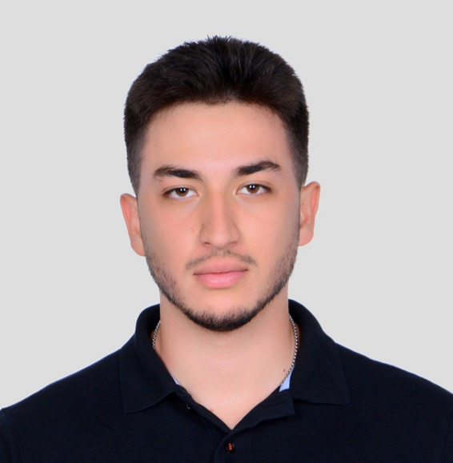

Eray Gündoğdu
I am currently working as a Computer Vision Engineer at ROKETSAN, where I develop solutions in image processing, synthetic data generation, and real-time computer vision systems. I hold a B.Sc. degree in Electrical and Electronics Engineering, with a concentration in machine learning and signal processing. I am particularly passionate about advancing projects and deepening expertise in the fields of machine learning and signal processing.